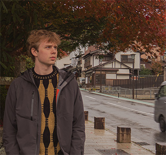

Mitt cv


I grundksolan gick jag på Stenkulan, nu går jag på NTI johanneberg. Som del av min utbildning där så tävlade och vann jag årliga programmeringstävling NTI Awards med ett eget designat spel. Projektet arbetade jag på under sommaren 2024 varje dag i cirka 2 månader. Jag gjorde all programmering, ljuddesign (inte musik), speldesign, grafik, trailers och publicerade spelet på egen hand på Steam.
Jag började programmera när jag var 9, då gick jag bara en Scratch kurs för unga. I mellanstadiet började jag skriva riktigt kod och gick en utbildning som heter "Unga programmerare", där fick man lära sig om grunläggande python och pygame utveckling. Det började ett stort intresse hoss spelprogrammering för mig vilket gjorde att jag senare gick vidare till Game maker studio 2 där jag gjorde många olika mine mobil spel. När jag tyckte att game maker började kännas lite begränsande så gick jag vidare till unity och efter en kort karriär där så började jag lära mig godot. I godot gjorde jag mitt första spel "Hooked on speed" och håller just nu på med mitt senaste projekt "Under exposed". Även om jag fortfarande älskar spelprogrammering och gör det nästan varje dag har jag som del av min utbildning lärt mig många andra språk i skolan. Bland annat så är denna hemsidan gjord som del av min webutvecklings kurs, där vi skulle göra en hemsida från grunden i html, css och javascript. Förutom det så har vi även lärt oss ruby programmering och skrivt arduino kod i c++.
Jag har varit scoutmedlem i 11 år i equmeniakyrkan Lerum. Jag brukade vara aktiv varje vecka fram tills att jag började gymnasiet men deltar fortfarande på läger flera gånger om året. Jag deltog i World Scout Jamboree 2023 med 50 000 andra deltagare från hela världen, det var en tre-veckorsresa till Sydkorea där jag var vice ledare över min patrull. Jag har precis gjort färdigt ledarutbildningen Ska'ut. Ska'ut är en tre-delad utbildning, den första delen är en praktisk del där man lär sig mycket om friluftsliv. Den andra delen är teoretisk och där lär man sig om ledarskap och planering, den tredje och sista delen innebär att man ska planera en fyradagars-hajk för sig själv och sin patrull.
Läs mer: equmenia.se/scout/skaut